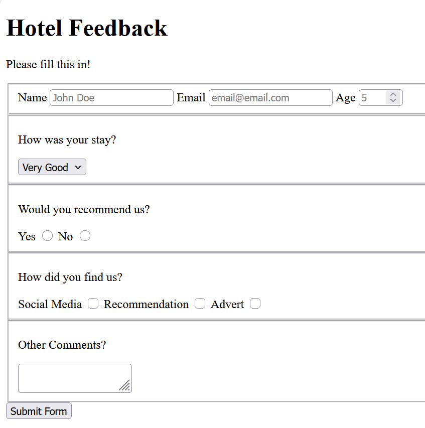
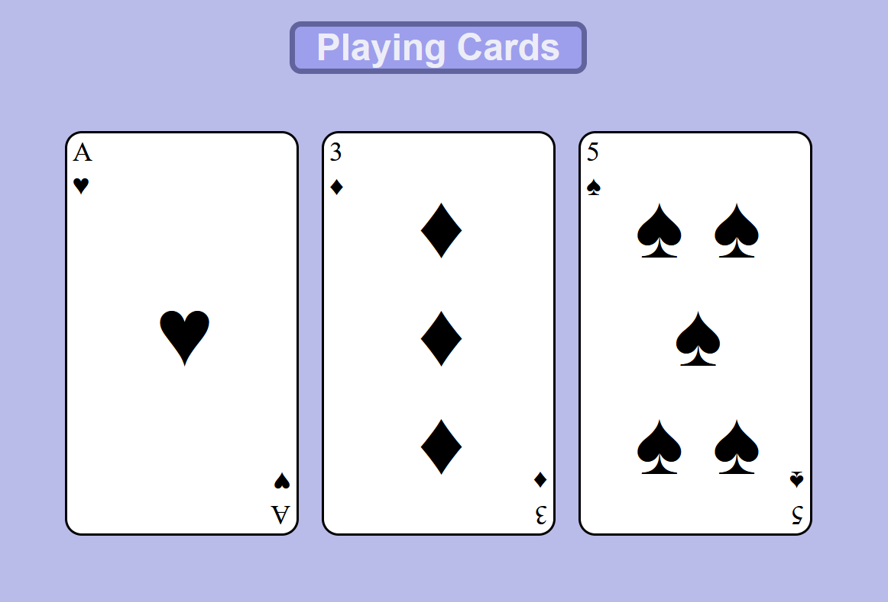

HTML Form

A form I created for my first Certification Project for the FreeCodeCamp - Responsive Web Design Course
ViewAspiring Software Engineer. Searching for a Degree Apprenticeship.
View Projects Download CV
A form I created for my first Certification Project for the FreeCodeCamp - Responsive Web Design Course
View
Cards created with html and css elements. This was a Certification Project for the FreeCodeCamp - Responsive Web Design Course
ViewSummary
ViewI have a basic understanding of various programming types; I have developed this skill through my A Level Computer Science as well as outside of school in my free time. I have a good understanding of the Python programming language and basic knowledge of GD Script, HTML and CSS. By trying to learn and understand these different languages I have further developed my problem solving and independent skills
I have also explored CAD and modelling which I have used across a combination of different hobbies and projects. The most notable of these being 3D Printing which allowed me to turn my digital designs into physical objects that could be used in day-to day life.
Using my CAD skills, I was able to model and 3D Print parts to be used in the design, construction and maintenance of aircraft. I did this using my creative and independent skills which allowed me to apply myself into a real-world situation.
ultimatealex12345@gmail.com · LinkedIn